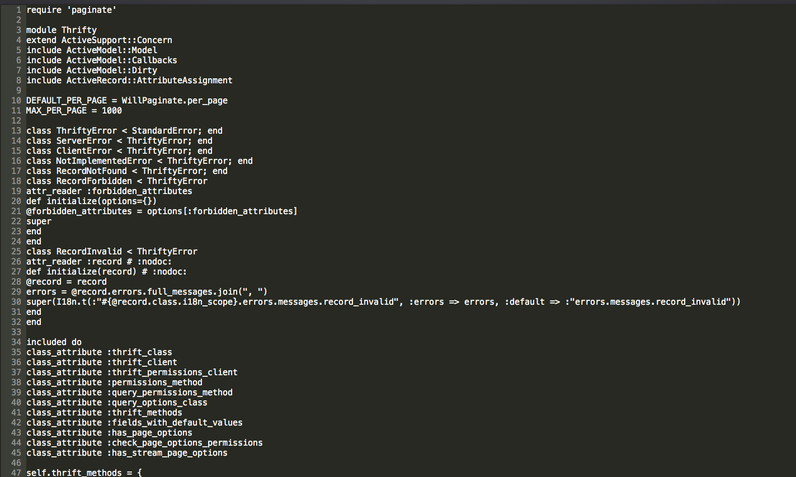

Writing a Programming Language
Brett Cassette
/
@brettcassette
This is just text
This is just text
This is just text

How does a computer understand what you wrote?
Tokens are the meaningful elements of a programming language
This is still just a stream of strings
Ruby Doesn't Get It Yet
Parsing
Group the tokens into meaningful Ruby statements
Context-Free Grammar
Happy Hacking!
Brett Cassette
/
@brettcassette